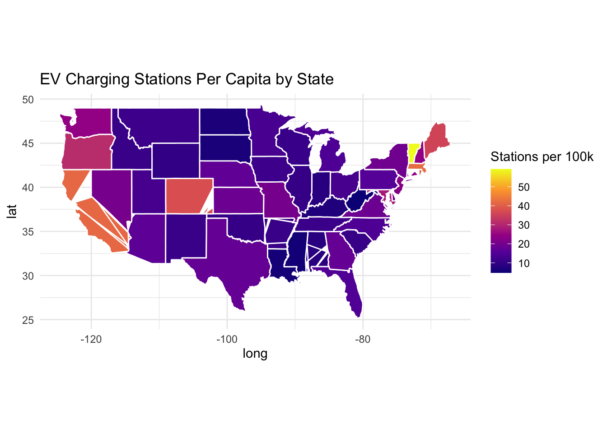

Click to Show/Hide Code
library(tidyverse)
library(ggplot2)
library(maps)
# Note: Data below was originally extracted from two CSV files:
# 1. /Users/mussakone/STA9750-2024-FALL/Station-counts-bystate.csv for EV station counts.
# 2. /Users/mussakone/STA9750-2024-FALL/US_States_Population_and_Land_Area.csv for population and land area.
# The data is presented here via textConnection for simplification in this script.
data_frame <- read.csv(textConnection("
State,Stations,Population,Land_Area
Alabama,424,5024279,52420
Alaska,65,733391,571951
Arizona,1198,7151502,113990
Arkansas,334,3011524,53179
California,16381,39538223,155779
Colorado,2165,5773714,103642
Connecticut,865,3605944,4845
Delaware,197,989948,1949
Florida,3430,23002597,53625
Georgia,1886,10711908,57906
Hawaii,384,1455271,6423
Idaho,205,1839106,82743
Illinois,1337,12812508,55519
Indiana,565,6785528,35826
Iowa,371,3190369,55857
Kansas,547,2937880,81823
Kentucky,328,4505836,39486
Louisiana,265,4657757,43204
Maine,486,1362359,30843
Maryland,1726,6177224,9707
Massachusetts,2965,7029917,7800
Michigan,1447,10077331,56539
Minnesota,773,5706494,79627
Mississippi,163,2961279,46923
Missouri,1240,6160281,68895
Montana,126,1084225,145546
Nebraska,339,1961504,76824
Nevada,630,3104614,109781
New Hampshire,330,1377529,8953
New Jersey,2107,9288994,7355
New Mexico,236,2117522,22591
New York,3898,20201249,7354
North Carolina,1522,10439388,47214
North Dakota,51,779094,53819
Ohio,1561,11799448,40948
Oklahoma,418,3959353,44826
Oregon,1316,4237256,95988
Pennsylvania,2045,13002700,44817
Rhode Island,441,1097379,2676
South Carolina,559,5118425,32020
South Dakota,56,886667,75811
Tennessee,785,6910840,41235
Texas,5132,29145505,261232
Utah,433,3271616,82170
Vermont,381,643077,9616
Virginia,1619,8631393,39490
Washington,1885,7705281,66456
West Virginia,86,1793716,24038
Wisconsin,646,5893718,54310
Wyoming,56,576851,97093
"))
# Calculate per capita and per square mile values
data_frame <- data_frame %>%
mutate(
Stations_Per_Capita = (Stations / Population) * 100000,
Stations_Per_Square_Mile = Stations / Land_Area
)
# Create a summary table
summary_table <- data_frame %>%
select(State, Stations_Per_Capita, Stations_Per_Square_Mile) %>%
arrange(desc(Stations_Per_Capita))
# Print the summary table
print(summary_table) State Stations_Per_Capita Stations_Per_Square_Mile
1 Vermont 59.246404 0.0396214642
2 Massachusetts 42.176885 0.3801282051
3 California 41.430795 0.1051553804
4 Rhode Island 40.186663 0.1647982063
5 Colorado 37.497528 0.0208892148
6 Maine 35.673416 0.0157572221
7 Oregon 31.057836 0.0137100471
8 Maryland 27.941354 0.1778098280
9 Hawaii 26.386838 0.0597851471
10 Washington 24.463741 0.0283646322
11 Connecticut 23.988171 0.1785345717
12 New Hampshire 23.955938 0.0368591534
13 New Jersey 22.682758 0.2864717879
14 Nevada 20.292378 0.0057386980
15 Missouri 20.128952 0.0179984034
16 Delaware 19.900035 0.1010774756
17 New York 19.295837 0.5300516726
18 Virginia 18.757111 0.0409977209
19 Kansas 18.618868 0.0066851619
20 Texas 17.608204 0.0196453727
21 Georgia 17.606574 0.0325700273
22 Nebraska 17.282657 0.0044126835
23 Arizona 16.751726 0.0105096938
24 Pennsylvania 15.727503 0.0456300065
25 Florida 14.911360 0.0639627040
26 North Carolina 14.579399 0.0322362011
27 Michigan 14.358961 0.0255929535
28 Minnesota 13.545971 0.0097077624
29 Utah 13.235050 0.0052695631
30 Ohio 13.229432 0.0381215200
31 Iowa 11.628749 0.0066419607
32 Montana 11.621204 0.0008657057
33 Tennessee 11.358966 0.0190372257
34 Idaho 11.146720 0.0024775510
35 New Mexico 11.145103 0.0104466380
36 Arkansas 11.090730 0.0062806747
37 Wisconsin 10.960823 0.0118946787
38 South Carolina 10.921328 0.0174578389
39 Oklahoma 10.557280 0.0093249453
40 Illinois 10.435115 0.0240818459
41 Wyoming 9.707880 0.0005767666
42 Alaska 8.862939 0.0001136461
43 Alabama 8.439022 0.0080885158
44 Indiana 8.326544 0.0157706693
45 Kentucky 7.279448 0.0083067416
46 North Dakota 6.546065 0.0009476207
47 South Dakota 6.315787 0.0007386791
48 Louisiana 5.689434 0.0061336913
49 Mississippi 5.504378 0.0034737762
50 West Virginia 4.794516 0.0035776687Click to Show/Hide Code
# Map visualization
us_states <- map_data("state")
data_frame$region <- tolower(data_frame$State)
map_data <- merge(us_states, data_frame, by = "region")
ggplot(map_data, aes(long, lat, group = group, fill = Stations_Per_Capita)) +
geom_polygon(color = "white") +
coord_fixed(1.3) +
scale_fill_viridis_c(option = "C") +
labs(title = "EV Charging Stations Per Capita by State", fill = "Stations per 100k") +
theme_minimal()